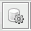
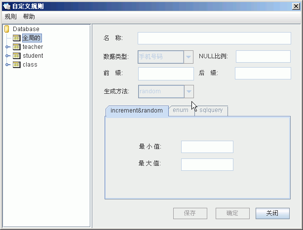
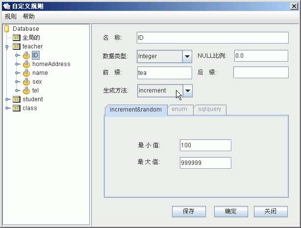
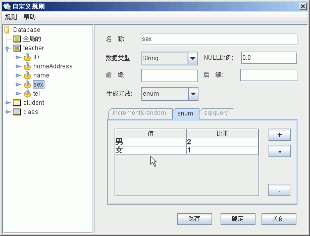
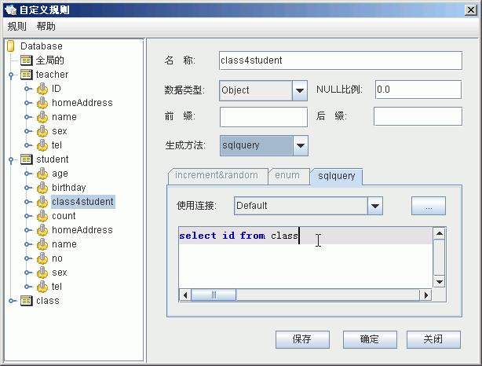
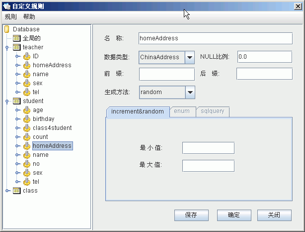
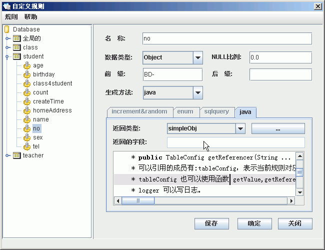

- 打开规则窗口，点击主菜单 规则->用户规则(或工具栏按钮),出现如下规则定义窗口,左边是规则树，右边是规则设置窗口。其中全局的里面的规则可以被所以的表引用到，其它下面的规则只能被各自表自己引用 。(下面的图片均用的程序附带的school示例,点击这里使用该示例)

规则编辑器

自动增长的规则

使用枚举的规则

使用sql查询的规则

使用怎定义类型的规则

使用Java高级规则
- 添加一个规则:
- 选中一个表(或选中全局的),菜单规则->添加新规则(或右键->添加新规则),这时一个名为NewRole的新规则, 面板中各项意义如下：
- 名称,规则的名称。(建议采用列名)
- 数据类型，是该规则生成的数据是什么类型的。常用的数据类型有Boolean,Byte,Double,Float,Integer,Long,Object,String。还可以添加自定义的类型,默认已经实现了:
- 手机号码，表示中国大陆地区的一个标准手机号码
- UUID，是指在一台机器上生成的数字，它保证对在同一时空中的所有机器都是唯一的。
- ChineseName 表示一个中国姓名,如：张三.李老四 等。
- ChineseAddress 中国的地址，如:湖北省，武汉市。(不包含区)
- IP等数据类型,一个合法的IP地址,如: 192.168.0.111.等。
- Null 比例，是生成的数据中，出现Null的比例数，对于可为空的字段，可以设置该值。主要是生成的数据更具有真实性。
- 前缀，在生成的值前面加的前缀，如果数据类型数值型，加前缀后将变成String型。
- 后缀，在生成的值后面加的后缀，如果数据类型数值型，加后缀后将变成String型。
- 生成方法，一共有六个选项，六个选项对于不同的数据类型意义也不一样。
注意，如果生成方法选中的不同，下面的参数设置界面会有相应变化，见上面的图片。
- increment,增长，对于数值类型表示按数据大小自动增长，当达到最大值时，会整除取余，保证数据都在min和max之间。当设置成自动增长时，各参数意义如下:
- 最大值(最大长度)，如果是数值型，为最大值，如果是Strig类型，是最大长度。
- 最小值(最小长度)，如果是数值型，为最小值，如果是Strig类型，是最小长度。
- random,随机生成数据。当设置成随机生成时，各参数意义如下:
- 最大值(最大长度)，如果是数值型，为最大值，如果是Strig类型，是最大长度。
- 最小值(最小长度)，如果是数值型，为最小值，如果是Strig类型，是最小长度。
- enum,枚举值，用枚举值填充，比如性别字段，如果为varchar(10)型，可以设置成枚举型，有两个枚举值:男，女。见上图:
- 添加枚举值,点击右边的"+"按钮添加一个枚举值。枚举值可以设置比重，生成数据时会按百分比生成。
- 删除枚举值，选中要删除的值，点击右边的"-"按钮就可以删除一个枚举值了。
- 编辑枚举值，选中要编辑的枚举值，双击，就可以编辑该值了。
- 通过文件或SQL导入枚举值，点击右边的"..."按钮通过文件或查询方式添加枚举值。
- sqlquery, SQL查询，从其它表查询，主要用于外键关联表中，比如Student表中的，classId字段，需要从Class表中查询出来。如果需要从别的数据库中查询值，可以先建立一个连接，然后使用新建的这个连接进行查询。
- sqlfunc SQL函数,直接使用函数返回值，每条记录都会调用一次函数。比如Student表中的createTime使用的sqlfunc类型，值为getdate(),表示当前时间（mysql数据库中该函数可能会出错，需要替换成相应函数。）
- java,使用java代码进行高级规则设置.使用该方法可以完成复杂的列间相关性配置.当一个表的值,依赖于另一个表的某个字段的值时,可以使用该方式.点击右上角的"..."按钮,使用高级java规则
- 输入完各项的值以后，点击保存即可。
- 删除一个规则:
- 选择要删除的规则，右键->删除所选规则，确认框点确定即可删除。
- 编辑一个规则:
- 左边选中要编辑的规则，右边直接改变相关值，保存即可。